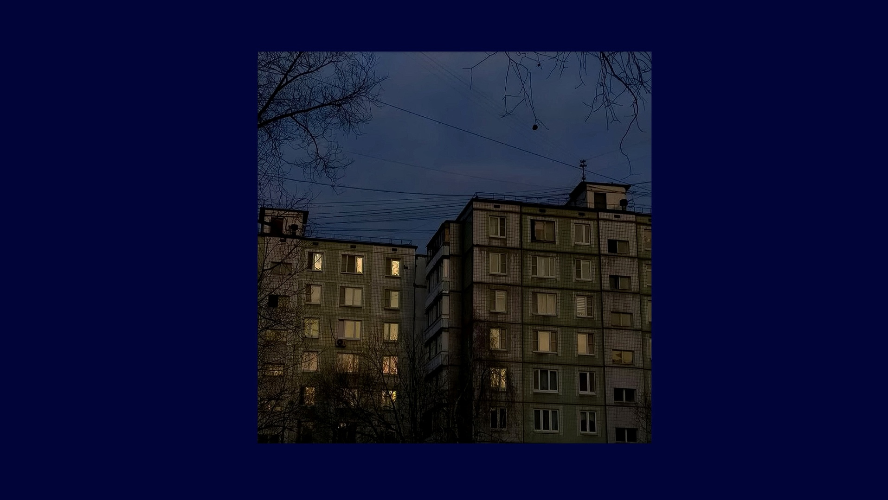

Бездельник
 Ничего не делать — это одна из самых полезных вещей, которые мы можем для себя сделать. Ученые доказали: лень укрепляет здоровье и делает нас более продуктивными. Вот пять неоспоримых аргументов на этот счет Причина № 1. Повышает творческие способности Причина № 2. Делает нас более продуктивными Причина № 3. Защищает мозг от перегрузок Причина № 4. Улучшает концентрацию внимания Причина № 5. Укрепляет здоровье и продлевает жизнь